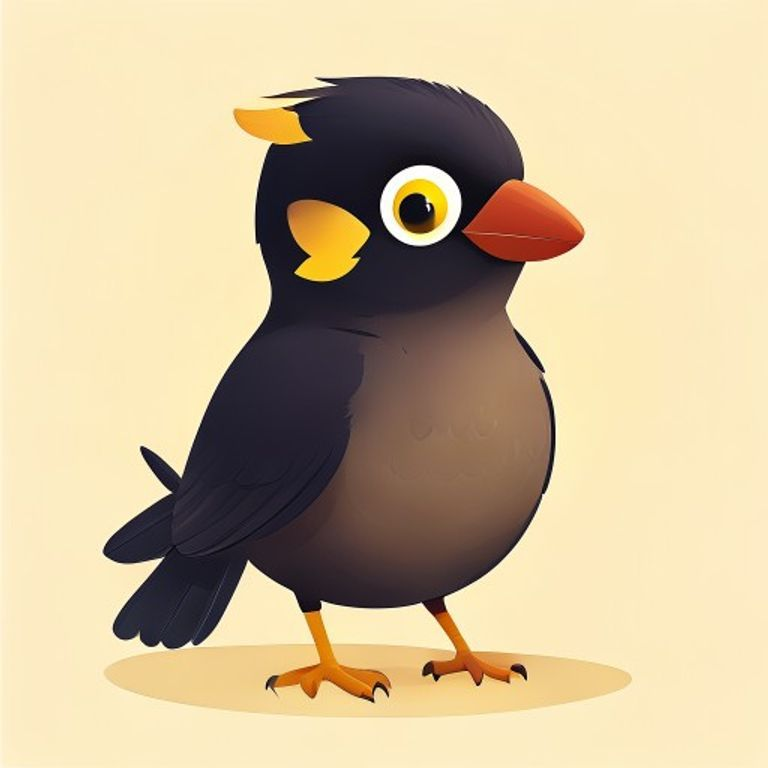

Theme / Vibe
Quiet authority, warm delivery
Navy and bone carry the structural weight of a trusted system of record; clay and marigold arrive only where the product speaks — replies, mascot, tagline. Premium through restraint, human through color.
The institutional calm of Sangam's navy-and-brass system, warmed by Maina's clay-and-marigold humanity. One inbox you can trust, answering every customer like a person who knows them.

A system of record that talks back like a person — trust you can see, warmth you can hear.
Navy and bone carry the structural weight of a trusted system of record; clay and marigold arrive only where the product speaks — replies, mascot, tagline. Premium through restraint, human through color.
Two 2026 currents converge: institutional credibility cues (serif, ink, "system of record" language) and the backlash against faceless automation (warmth, character, real voice). Owning both closes the gap competitors leave open.
Insta, FB, WhatsApp, TikTok & Viber converge into a single threaded timeline (Sangam's structure); Maya replies in the merchant's own voice and tone (Maina's promise), and routes hot leads up automatically.
Maya the myna — the mascot with the strongest demo story (a bird that literally learns and repeats your voice) — reskinned in navy and brass so she reads as infrastructure, not just a cute character.
Instant answers at 2am that still sound like the shop owner. Every inquiry becomes a tracked opportunity, then an order — measurable revenue, delivered with warmth.
The conversation is the database, and Maya is the face of it — the system grows from "reply faster" into the operating system the whole shop runs on, without losing its human face.
Sangam's structural navy/brass system, warmed with Maina's clay/marigold accents. Structurally comparable to the two source boards: logo → palette → type → tagline → icons → mascot → mood.
Mark: Sangam's confluence crest (two currents meeting), recoloured so the second stroke and base dot run clay/marigold instead of pure brass — the visual handshake between the two source concepts. Wordmark set in Fraunces under the locked name, Myna.
Recommended mix: ~50% Ink Navy (structure, chrome, headers) · ~30% Bone (ground, cards, whitespace) · ~15% Clay/Marigold (accent — CTAs, mascot, tagline highlights, warmth moments) · ~5% Brass (fine detail — rules, dividers, icon strokes, premium touches). Navy and bone carry the trust; clay and marigold are dosed like Maina's own restraint — enough to feel human, never enough to feel loud.
Maya wins the merge on story, not just charm: a myna bird that literally learns the voices around it and speaks them back is the single most demo-able metaphor across all three source concepts for a mascot that replies in your voice. Sangam's owl (Ulu) is quieter and more institutional, but harder to put in a product demo GIF.
For this merged identity, Maya's colour story shifts away from Maina's purely warm cream-and-clay palette toward the merged system: navy or deep-teal body plumage (echoing Ink Navy), with the brass/gold eye-ring kept as the signature and clay/marigold reserved for a small chest-flash or beak accent — so she reads as belonging to a trusted system, not only a warm one.
Direction: Sangam's dignified low-key/blue-hour documentary lighting, shot on Maina's warmer film-grain stock — real Nepali shopkeepers, golden-hour or single warm light source, candid over posed. Trust in the composition, warmth in the grade.